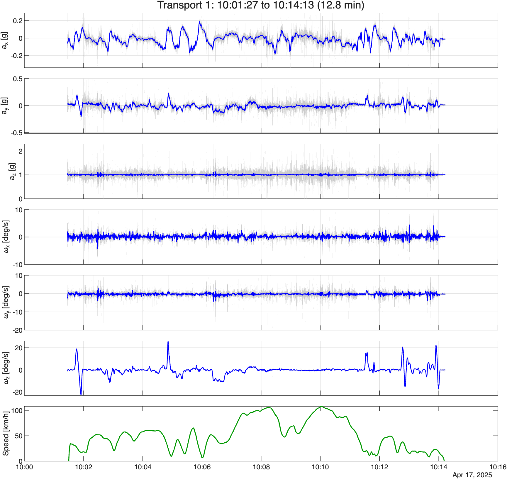
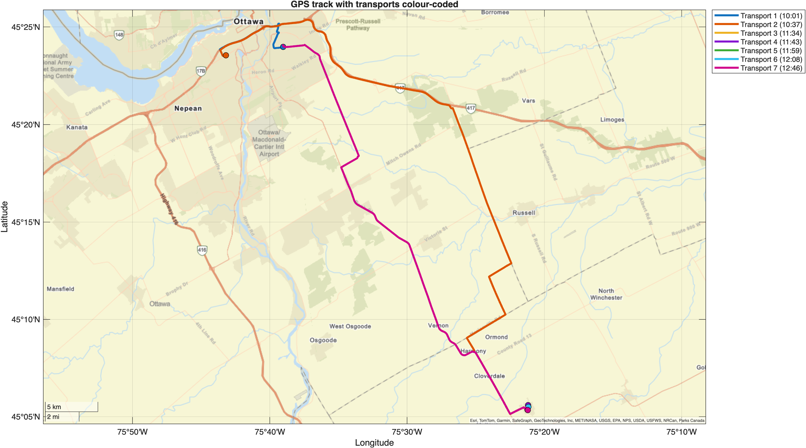
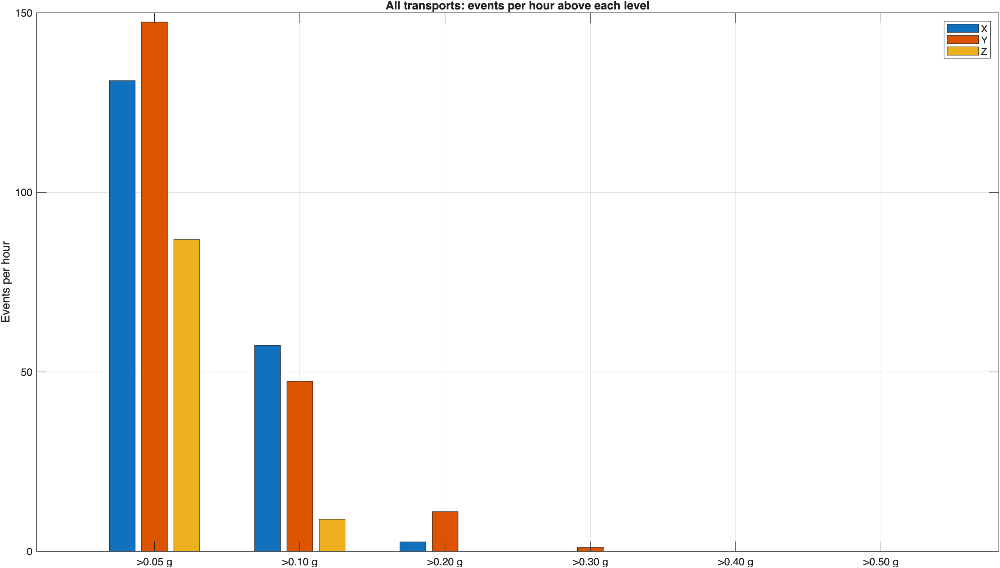

Neonatal Patient Transportation Project
This study explores the effects of sustained acceleration and shock on neonatal patients being transported in ground ambulances.
The problem
Most research on neonatal patient transport reviews the effects of noise and vibration, but there seems to be a gap in research on sustained acceleration and shocks that can occur during braking, cornering and acceleration in ground ambulances. This study looks to explore the effects that these might have on the well-being of a neonatal patient.
What I built
I have reviewed 4 hours of ambulance transport including accelerometer, gyro and GPS data. Processing this data before performing any analysis is essential. First I wanted to determine how to filter it. I did this by determining a cut-off frequency... More to come later!
Result
This project is currently underway. I will update this once I have more to show!
Gallery





